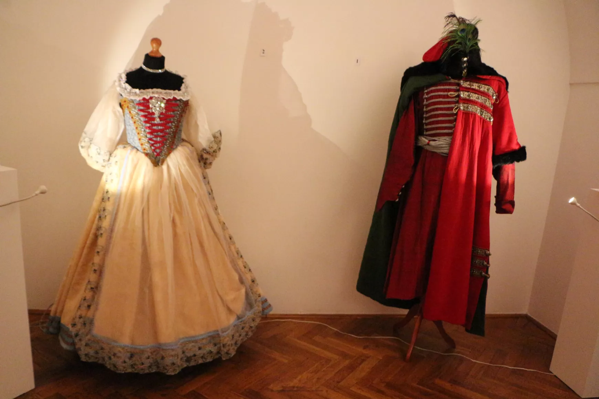
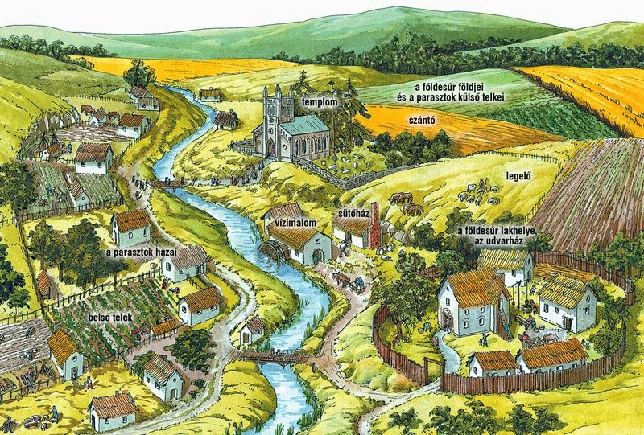
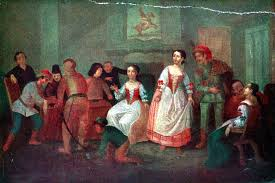
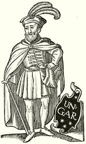
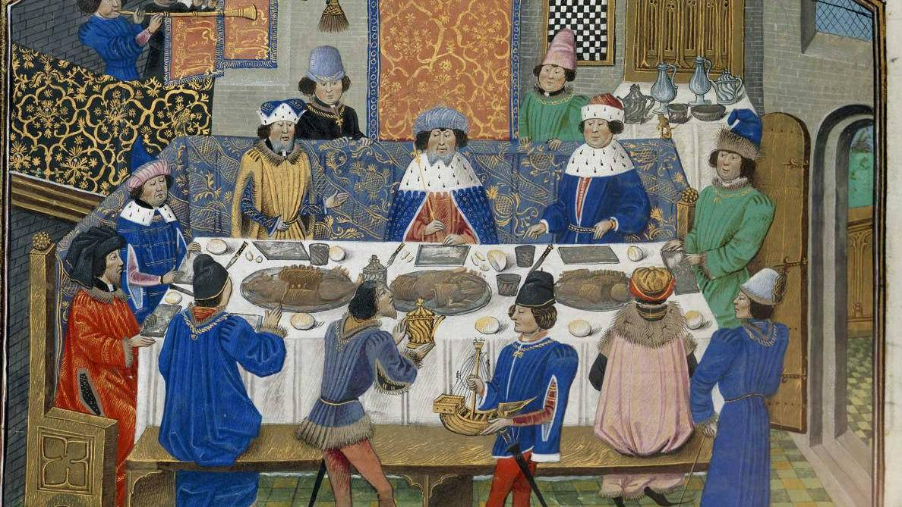
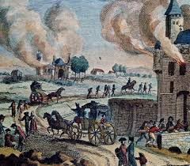
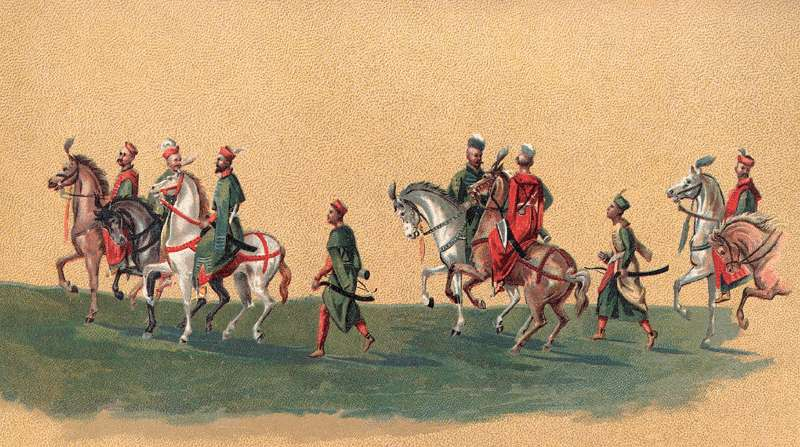
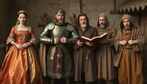

Jellemző öltözködés

Alulra egy vászoninget és harisnyanadrágot húztam, ami szorosan illeszkedett a lábamra. A felsőtestemre egy bélelt, hasítékos tunikát vagy mellényt vettem, ami a derekamat hangsúlyozta. A hidegben egy bélelt, prémgalléros köpenyt viseltem, amit egy díszes csattal fogtam össze a vállamon. A ruhám azt árulja el rólam, hogy egy gazdag nemes vagyok.
Környezet

Kőből rakott, vastag falú udvarházban élek a birtokom közepén. A házam kétszintes, magas tetővel, az alsó szinten a nagyterem van, ahol a vendégeimet fogadom és ahol étkezünk. Tágas udvarom van, istállóval, magtárral és egy külön műhellyel, ahol a kovács dolgozik. Saját földjeim terülnek el a ház körül: szántók, rétek és kisebb erdőrész is tartozik hozzám. A jobbágyaim művelik a földet, én pedig gondoskodom a védelemről és a rendről. Kőből épült, kisebb vár is áll a birtok szélén, erős fallal és őrtoronnyal. Oda húzódunk vissza, ha veszély fenyeget. A település körülöttem főként faluból áll. A parasztházak vályogból és fából épültek, nádtetővel fedve. A földek a falu körül húzódnak, azon túl erdők és dombok veszik körül a birtokomat.
Életmód

Hétköznapjaim korán kezdődnek. Reggel körbejárom a birtokot, meghallgatom a jobbágyaim panaszait, ellenőrzöm a földek állapotát és intézem az ügyes-bajos dolgokat. Nem telik el nap úgy, hogy ne kellene döntést hoznom. Az ünnep más, ilyenkor mise van a templomban, lakomát rendezünk a nagyteremben, és a munka helyett inkább közösségben töltjük az időt. A hétköznap a kötelességről szól, az ünnep a méltóságról és az összetartozásról. Szabadidőmben vadászom, lovagolok vagy fegyverforgatást gyakorlok. Néha sakkozom vagy történeteket hallgatok a vándoroktól.
Feladataim

Ellátom a közösség védelmét, mert földbirtkos vagyok. Hűbéri esküt teszek a legnagyobb hűbérúrnak, az uralkodónak, kiráynak. Innentől már engedelmességgel tartozom az uralkodónak, mert tőle kaptam a földet, amin élek.Ha nem vagyok engedelmes, a földet elveheti tőlem. Parancsára a háborúban kell mellette teljesítenem, hogy megvédjem a hazámat, és másokat is. Bármikor meglátogathat, ilyenkor méltón kell kiszolgálnom őt. Cserébe mentességeket, kiváltságokat kapok tőle. Tőlem függenek a jobbágyak, akik művelik a földem. Én adok munkát nekik.
Ünnepek

Nemesként sok ünnepben részt vehetek. A temetésen mindig nagy szórákozás és mulatozás van. További ünnepek a Krisztushoz kapcsolódó Karácsony, Húsvét ünnepek. Szenteket, valamint most élő uralkodókat is ünnepelünk. Helyi, falusi ünnepeken, mulatságokon is részt veszek. Lovagi és udvari ünnepek is vannak.
Kötelezettségek és félelmek

Mivel a királynak esküt tettem, nem kell adót fizessek. Valamint bírói ítélet nélkül nem tartóztahatnak le. Nemesként sok mindentől félek. A jobbágyok, akik a földemen dolgoznak, elmehetnek ha nem bánok elég jól velük Gyakoriak az éhínségek, járványok ami miatt a halálozási ráta magas. Bármikor megbüntethet a király, ha nem viselkedek elég jól. Ha háborúba küldenek, meghalhatok.
Viselkedés és emberi kapcsolatok

Azért, mert nemes vagyok, a királyt tisztelem, meghallgatom és hűbéri esküt tettem neki. Végül is ő adta nekem földjeimet, és hűséggel tartozom neki. A jobbágyaimat megdolgoztatom, mert ők pedig nekem szolgálnak.
Szabályok és hagyományok

Hűbéri esküt kellett tennem az uralkodónak. Ha behív háborúba, akkor hallgatnom kell rá, pontosabban hűséggel és szolgálattal tartozom neki. De ugye azért is teszem, hogy megvédjem a jobbágyaimat, a földemet, és a jobbágyok pedig adóval tartoznak nekem. Az uralkodó cserébe immunitást és privilégiumot ad a szolgálatomért. De igazából én tovább tudtam osztani a földjeimet, amelyeket kaptam, más nemeseknek, így hűbérúr (szenior) lehettem, vagy fordítva. Gyűlésekre jártam, ahol közösen hoztuk meg a törvényeket, de a két legfontosabb ügy, amiről beszélünk: az adók és a hadsereg.